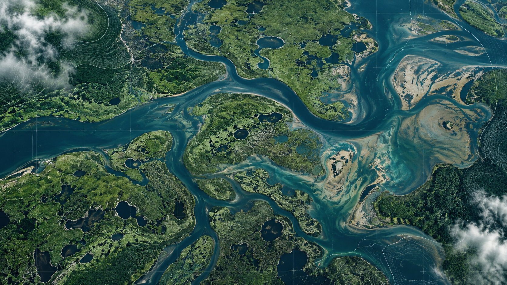
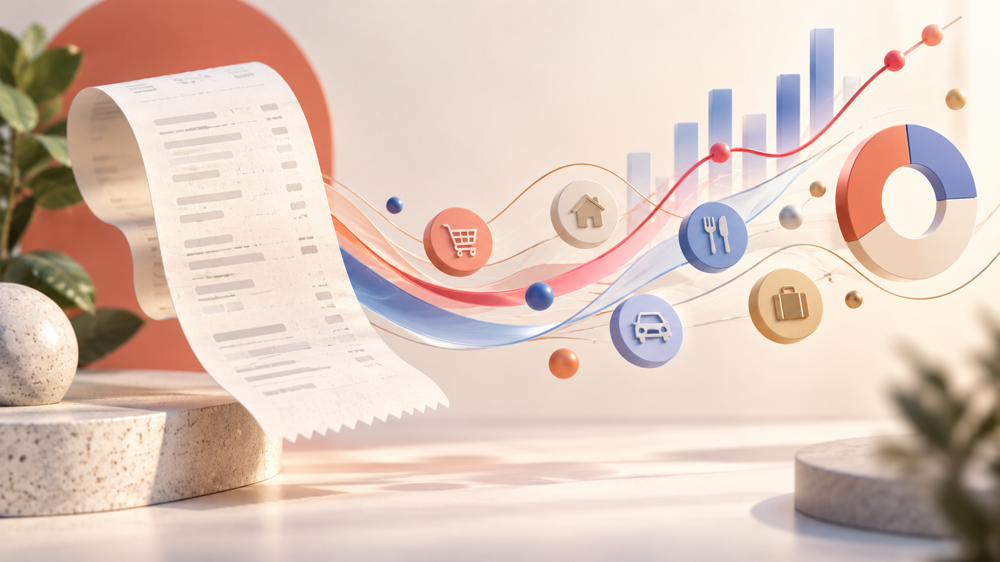
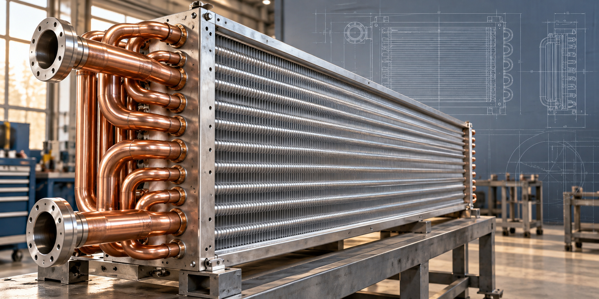

Computer Engineering · Queen’s University ’26
Software. Data.
Hands-on engineering.
I’m James, a Computer Engineering graduate interested in how things work—and how to make them work better.
Based in Calgary. Open to graduate roles in Canada and the UK.
Let’s talkMy work
Hover to explore · Click for the story

Capstone projectWetMaps
Mapping Canadian wetlands with machine learning and satellite data.
Explore projectqRate
A platform for students to find and share course and professor reviews.
Explore project
Web applicationReceiptMe
Turning everyday receipts into personalised spending insights.
Explore project
Engineering internshipDirect Coil
A year bringing custom heat-transfer equipment from drawings to production.
Explore experienceFrom satellite data to the manufacturing floor.
Swipe to explore →Four projects. Different ways of solving problems.WetMaps
Mapping Canadian wetlands with machine learning and satellite data.
WetMaps is a geospatial classification system built around AlphaEarth satellite embeddings. It brings together environmental data, model training, and cloud processing to map wetlands across Canada.
My contribution
- Built a cloud-based pipeline on Google Cloud for model training, inference, and processing large GeoTIFF files.
- Automated testing and deployment with Docker and CI/CD to support reproducible experiments.
- Evaluated model robustness using K-fold cross-validation, perturbation testing, and seed sensitivity analysis.
Tools
Python, Scikit-learn, Google Earth Engine, Google Cloud, Flask, React, Docker.
qRate
A place for students to share and explore course and professor reviews.
I built and deployed a review platform using MongoDB, Express, React, and Node.js, with hosting on Microsoft Azure.
My contribution
- Developed the application for students to publish and browse ratings.
- Set up GitHub Actions to automate testing and deployment.
- Implemented JWT authentication, input validation, and profanity filters.
Tools
React, Express, Node.js, MongoDB, Microsoft Azure, GitHub Actions.
ReceiptMe
An expense tracker with receipt uploads and personalised spending summaries.
ReceiptMe lets users track expenses and explore their spending through an application built with MongoDB, Express, React, and Node.js.
My contribution
- Built receipt-upload and expense-tracking features.
- Integrated the Gemini API to produce personalised 30-day summaries from users’ spending data.
- Implemented Google OAuth and spending comparisons by age, location, or income.
Tools
React, Express, Node.js, MongoDB, Gemini API, Google OAuth.
Direct Coil
Engineering design experience on the manufacturing floor.
During my year at Direct Coil in Kingston, Ontario, I worked on drawings for heat-transfer equipment, including fluid coolers and condensers. Rotating through departments helped me understand the products, manufacturing processes, and practical constraints behind each design.
My work
- Created 2D and 3D parts drawings in AutoCAD.
- Worked with manufacturing teams to resolve production challenges and improve manufacturability.
- Communicated with customers to resolve design conflicts and balance performance with practicality.
- Contributed to revisions of design standards and managed time-sensitive jobs.
Areas of experience
AutoCAD, heat-transfer equipment, manufacturing processes, design standards, customer communication.